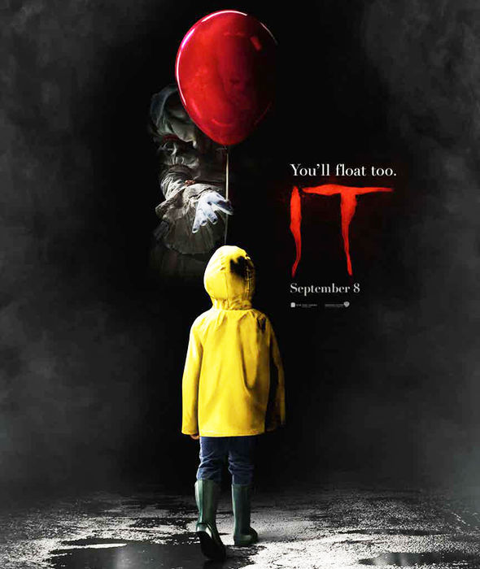

Welcome to my Horror Movie Collection
My Top 10(That I can remember)
Split

Three girls are kidnapped by a man with a diagnosed 23 distinct personalities. They must try to escape before the apparent emergence of a frightful new 24th.
Number 9
IT

After recent cases of disappearing local kids in the town of Derry, Maine, IT follows a group of kids dubbed "The Losers' Club" in the summer of 1989 and their discovery and scary encounters of a shape-shifting demonic entity, known to
return every 27 years and preys on your own personal fears.
Number 8
The Den
A young woman studying the habits of webcam users witnesses a murder online and becomes the killer's next target.
Number 7
As above so below

When a team of explorers ventures into the catacombs that lie beneath the streets of Paris, they uncover the dark secret that lies within this city of the dead.
Number 6
The Visit

Two siblings become increasingly frightened by their grandparents' disturbing behavior while visiting them on vacation.
Number 5
Last Shift
A rookie cop's 1st shift alone in the last night of a closing police station turns into a living nightmare.
Number 4
Sinister

Washed-up true crime writer Ellison Oswalt finds a box of super 8 home movies in his new home that suggest the murder that he is currently researching is the work of a serial killer whose legacy dates back to the 1960s.
Number 3
The Collector
A desperate man plans to break into his wealthy employer's house, then learns that another thief has beaten him to it and rigged the place with deadly traps
Number 2
The VHS Series
When a group of misfits are hired by an unknown third party to burglarize a desolate house and acquire a rare VHS tape, they discover more found footage than they bargained for.
Number 1
The Houses October Built

Five friends are stalked by a group of mysterious and disturbed individuals while on a road trip looking for the ultimate haunted house attraction.